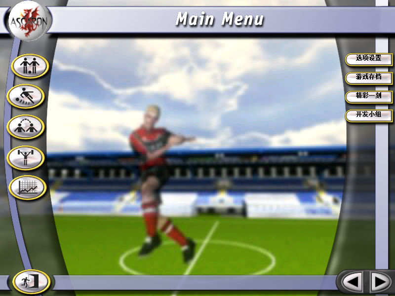
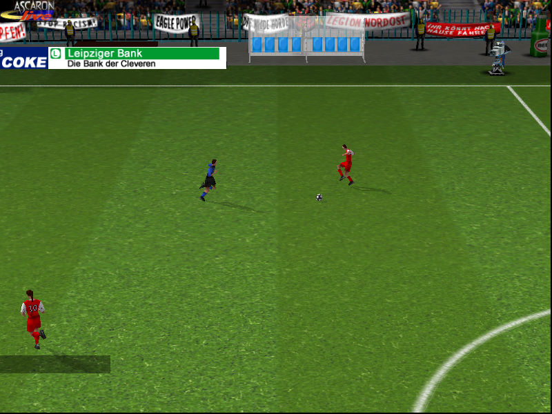

名稱：快樂足球2002 (Anstoss Action／Anstoss Soccer，簡中版) 簡介：Ascaron 2001年出品的足球遊戲，2002年由天人互動簡中化並代理發行 [待補]。

保護：不明 備註：非安裝移機者，需進行下列Registry註冊： [HKEY_LOCAL_MACHINE\SOFTWARE\Ascaron\ANSTOSS Soccer\1.00] [HKEY_LOCAL_MACHINE\SOFTWARE\WOW6432Node\Ascaron\ANSTOSS Soccer\1.00] "InstalledTo"="." 備註：VirtualBox、VMware+XP均無法正常執行，建議使用Win64實機直接執行，若無法執行， 則搭配dgVoodoo2以視窗模式執行。 限制：不可切回桌面，必當。